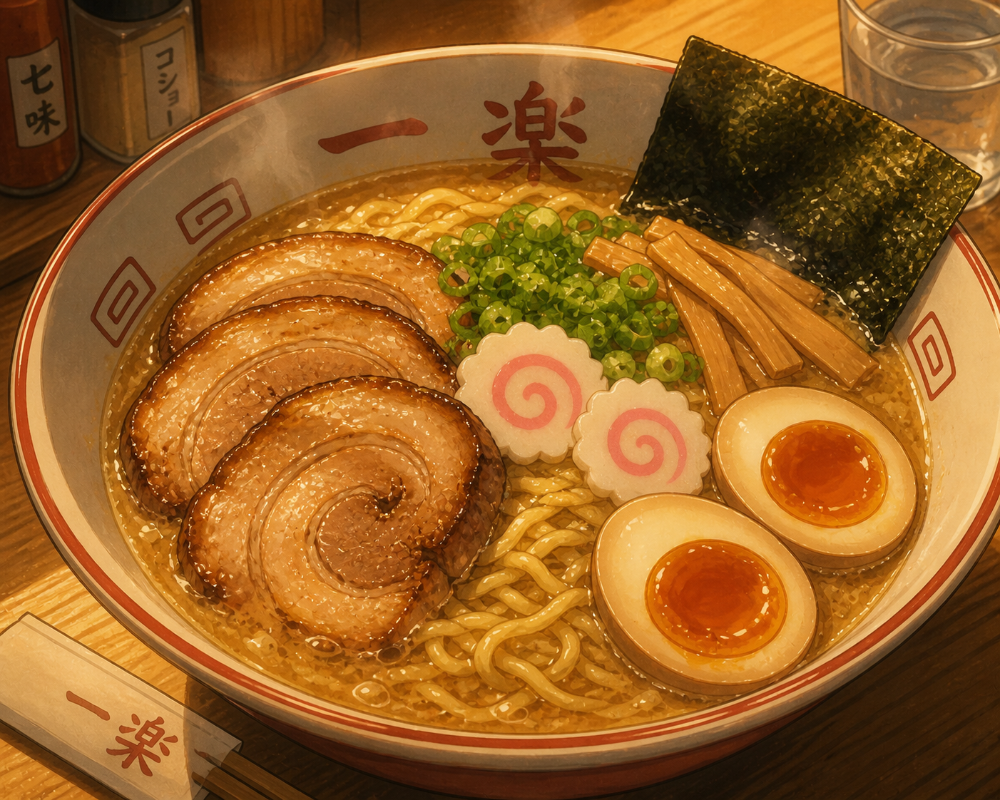

Home
Ichiraku Ramen

Description
Ichiraku Ramen is Naruto's ultimate comfort food from the Hidden Leaf Village. This tonktsu-style noodle bowl features rich pork broth, chewy noodles, and classic toppings for a hearty meal. Dattebayo!
Ingredient
- 4 cups pork or chicken stock
- 200g ramen noodles
- 4 slices chashu pork
- 2 soft-boiled eggs
- Bean sprouts, green onions, nori
Steps
- Simmer stock with soy and seasonings for 20 minutes
- Cook noodles al dente, drain.
- Assemble in bowl: broth, noodles, toppings.
- Serve hot and slurp!